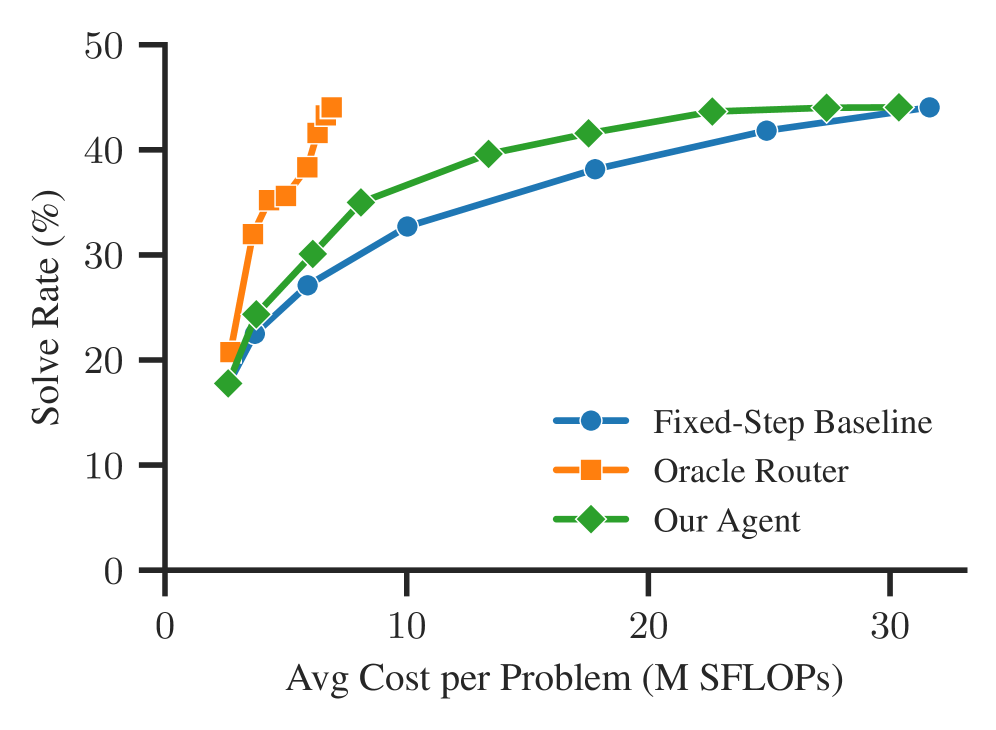

Builds an LLM agent that decomposes PutnamBench problems into Lean lemmas and generates proofs. A learned router uses failed Lean compiler attempts to decide whether to retry or restart.
Abstract
Large language models (LLMs) are increasingly used in workflows for generating formal proofs in Lean. These workflows often decompose problems into smaller lemmas, sample many proof attempts, and use compiler feedback to guide search. However, they can be prohibitively expensive, often spending substantial compute on attempts that ultimately fail. In this work, we address this problem with an action routing agent that consists of a data plane and a control plane. The data plane generates natural-language lemma decompositions, formalizes them in Lean, and samples proof attempts for the resulting theorem and lemma targets. The control plane observes previous failed Lean attempts, estimates both the likelihood of success and the cost of another attempt, and decides whether to continue proving the current target or restart from a new breakdown. On a subset of PutnamBench, our agent decreases the cost by 28.9% over a fixed-step baseline on average, preserving performance while using substantially less compute. These results suggest that failed Lean trajectories provide actionable signals for cost-aware resource allocation in agentic theorem proving.
Problem
Agentic LLM workflows for Lean theorem proving decompose problems into lemmas and sample many proof attempts. This is very expensive, and much of the compute is spent on attempts that ultimately fail.
Approach
An action routing agent has two parts. The data plane generates natural-language lemma breakdowns with GPT-OSS-20B, formalizes them in Lean, and samples proof attempts for the theorem and lemma targets. The control plane extracts features from failed Lean attempts (proof similarity, error diversity, attempt count) and estimates the quality and cost of another attempt. It then decides, via a cost-quality tradeoff q−λc, whether to keep attempting the current target or restart from a new breakdown.
Results
Evaluated on a 43-problem test split from an 85-problem PutnamBench subset. The agent cut cost by 28.9% on average versus a fixed-step baseline while preserving performance. It reduced the required budget by 25.8% at parity accuracy and improved accuracy by 7.8% at parity cost. Ablations show all three features contribute.

Figure 3 : Cost-quality curve of our agent compared with the fixed-step baseline and the zero-noise oracle router.